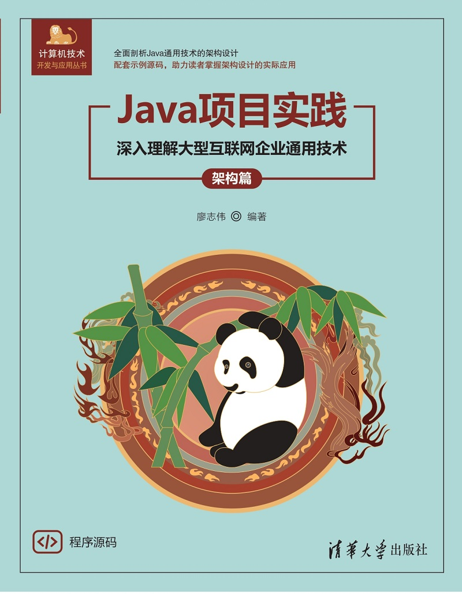
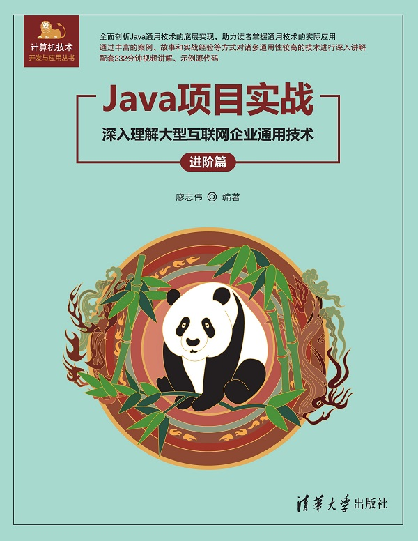
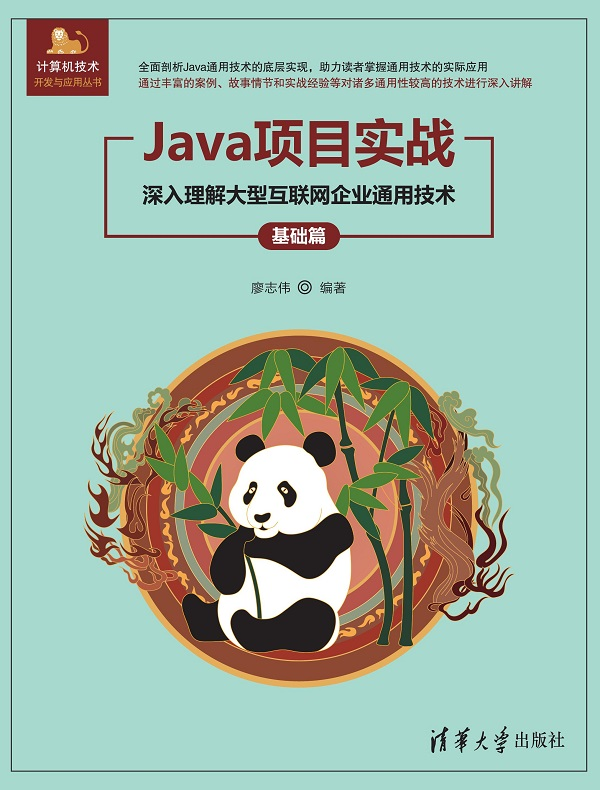
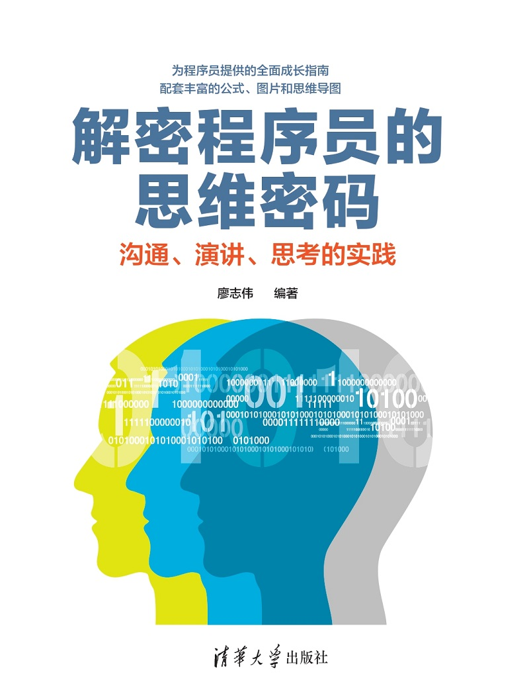

作品成果 - 廖志伟
独立出版图书
清华大学出版社

Java项目实战——深入理解大型互联网企业通用技术（架构篇）
以实践项目架构为核心理念，系统性围绕架构理论、高并发架构、高性能架构、高可用架构、分布式架构、微服务架构、架构安全、架构落地等8章展开，图文并茂，配套示例源代码。
前往清华社官网查看详情
Java项目实战——深入理解大型互联网企业通用技术（进阶篇）
面向Java开发者进阶的实战指南，涵盖项目管理、23种设计模式、Spring Boot原理、Docker/K8s部署、JVM/MySQL/Redis/消息中间件/ElasticSearch调优等9大章节，配套232分钟视频讲解。
前往清华社官网查看详情
Java项目实战——深入理解大型互联网企业通用技术（基础篇）
围绕Nacos、Dubbo、ZooKeeper、OAuth2、Gateway、Skywalking、Sentinel、ShardingSphere、ELK、RocketMQ等10大通用技术点，深度解析核心原理，配套丰富示例代码与实战案例。
前往清华社官网查看详情
解密程序员的思维密码——沟通、演讲、思考的实践
专为程序员量身定制的成长指南，围绕解决难题、深度思考、创造力、职业发展、职场沟通、写作技巧、技术演讲、个人成长8大核心挑战，配套公式、图片和思维导图。
前往清华社官网查看详情深智数位（台版繁体）
干过哪些事
技术与创作
在CSDN写过一千多篇技术文章
出版过专业技术书籍
在技术文章的审核中担任过评审老师
编写过多种产品软文
为问卷调查报告制定过题目
参与过专业课程的制定与视频录制
独立开发过自己的APP
创建过个人社区和开源项目
创业与商业
创立过自己的公司和淘宝店
涉足过游戏主播和比赛选手
生活与挑战
跑过十五公里、徒步爬过衡山
有过三个月减肥20斤的经历